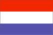

{kind=link}


![[Country map of Netherlands]](../maps/nl-map.jpg)
| Netherlands |  |
|
| | |
| Introduction |
Background: The Kingdom of the Netherlands was formed in 1815. In 1830 Belgium seceded and formed a separate kingdom. The Netherlands remained neutral in World War I but suffered a brutal invasion and occupation by Germany in World War II. A modern, industrialized nation, the Netherlands is also a large exporter of agricultural products. The country was a founding member of NATO and the EC, and participated in the introduction of the euro in 1999.
| Geography |
Location: Western Europe, bordering the North Sea, between Belgium and Germany
Geographic coordinates: 52 30 N, 5 45 E
Map references: Europe
Area:
total:
41,532 sq km
land:
33,889 sq km
water:
7,643 sq km
Area - comparative: slightly less than twice the size of New Jersey
Land boundaries:
total:
1,027 km
border countries:
Belgium 450 km, Germany 577 km
Coastline: 451 km
Maritime claims:
exclusive fishing zone:
200 nm
territorial sea:
12 nm
Climate: temperate; marine; cool summers and mild winters
Terrain: mostly coastal lowland and reclaimed land (polders); some hills in southeast
Elevation extremes:
lowest point:
Prins Alexanderpolder -7 m
highest point:
Vaalserberg 321 m
Natural resources: natural gas, petroleum, arable land
Land use:
arable land:
25%
permanent crops:
3%
permanent pastures:
25%
forests and woodland:
8%
other:
39% (1996 est.)
Irrigated land: 6,000 sq km (1996 est.)
Natural hazards: the extensive system of dikes and dams protects nearly one-half of the total area from being flooded
Environment - current issues: water pollution in the form of heavy metals, organic compounds, and nutrients such as nitrates and phosphates; air pollution from vehicles and refining activities; acid rain
Environment - international agreements:
party to:
Air Pollution, Air Pollution-Nitrogen Oxides, Air Pollution-Sulphur 85, Air Pollution-Sulphur 94, Air Pollution-Volatile Organic Compounds, Antarctic-Environmental Protocol, Antarctic Treaty, Biodiversity, Climate Change, Desertification, Endangered Species, Environmental Modification, Hazardous Wastes, Law of the Sea, Marine Dumping, Marine Life Conservation, Nuclear Test Ban, Ozone Layer Protection, Ship Pollution, Tropical Timber 83, Tropical Timber 94, Wetlands, Whaling
signed, but not ratified:
Air Pollution-Persistent Organic Pollutants, Biodiversity, Climate Change-Kyoto Protocol
Geography - note: located at mouths of three major European rivers (Rhine, Maas or Meuse, and Schelde)
| People |
Population: 15,892,237 (July 2000 est.)
Age structure:
0-14 years:
18% (male 1,497,290; female 1,431,671)
15-64 years:
68% (male 5,490,518; female 5,305,848)
65 years and over:
14% (male 885,839; female 1,281,071) (2000 est.)
Population growth rate: 0.57% (2000 est.)
Birth rate: 12.12 births/1,000 population (2000 est.)
Death rate: 8.72 deaths/1,000 population (2000 est.)
Net migration rate: 2.3 migrant(s)/1,000 population (2000 est.)
Sex ratio:
at birth:
1.05 male(s)/female
under 15 years:
1.05 male(s)/female
15-64 years:
1.03 male(s)/female
65 years and over:
0.69 male(s)/female
total population:
0.98 male(s)/female (2000 est.)
Infant mortality rate: 4.42 deaths/1,000 live births (2000 est.)
Life expectancy at birth:
total population:
78.28 years
male:
75.4 years
female:
81.28 years (2000 est.)
Total fertility rate: 1.64 children born/woman (2000 est.)
Nationality:
noun:
Dutchman(men), Dutchwoman(women)
adjective:
Dutch
Ethnic groups: Dutch 91%, Moroccans, Turks, and other 9% (1999 est.)
Religions: Roman Catholic 34%, Protestant 25%, Muslim 3%, other 2%, unaffiliated 36% (1991)
Languages: Dutch
Literacy:
definition:
age 15 and over can read and write
total population:
99% (1979 est.)
male:
NA%
female:
NA%
| Government |
Country name:
conventional long form:
Kingdom of the Netherlands
conventional short form:
Netherlands
local long form:
Koninkrijk der Nederlanden
local short form:
Nederland
Data code: NL
Government type: constitutional monarchy
Capital: Amsterdam; The Hague is the seat of government
Administrative divisions: 12 provinces (provincien, singular - provincie); Drenthe, Flevoland, Friesland, Gelderland, Groningen, Limburg, Noord-Brabant, Noord-Holland, Overijssel, Utrecht, Zeeland, Zuid-Holland
Dependent areas: Aruba, Netherlands Antilles
Independence: 1579 (from Spain)
National holiday: Queen's Day, 30 April
Constitution: adopted 1814; amended many times, last time 17 February 1983
Legal system: civil law system incorporating French penal theory; constitution does not permit judicial review of acts of the States General; accepts compulsory ICJ jurisdiction, with reservations
Suffrage: 18 years of age; universal
Executive branch:
chief of state:
Queen BEATRIX Wilhelmina Armgard (since 30 April 1980); Heir Apparent WILLEM-ALEXANDER (born 27 April 1967), son of the monarch
head of government:
Prime Minister Wim KOK (since 22 August 1994) and Vice Prime Ministers Annemarie JORRITSMA (since 3 August 1998) and Els BORST-EILERS (since 3 August 1998)
cabinet:
Council of Ministers appointed by the monarch
elections:
none; the monarch is hereditary; following Second Chamber elections, the leader of the majority party or leader of a majority coalition is usually appointed prime minister by the monarch; vice prime ministers appointed by the monarch
note:
government coalition - PvdA, VVD, and D'66; there is also a Council of State composed of the monarch, heir apparent, and councilors consulted by the executive on legislative and administrative policy
Legislative branch:
bicameral States General or Staten Generaal consists of the First Chamber or Eerste Kamer (75 seats; members indirectly elected by the country's 12 provincial councils for four-year terms) and the Second Chamber or Tweede Kamer (150 seats; members directly elected by popular vote to serve four-year terms)
elections:
First Chamber - last held 25 May 1999 (next to be held NA May 2003); Second Chamber - last held 6 May 1998 (next to be held May 2002)
election results:
First Chamber - percent of vote by party - NA; seats by party - CDA 20, VVD 19, PvdA 15, D'66 4, other 17; Second Chamber - percent of vote by party - PvdA 30.0%, VVD 25.3%, CDA 19.3%, D'66 9.3%, other 16.1%; seats by party - PvdA 45, VVD 38, CDA 29, D'66 14, other 24
Judicial branch: Supreme Court or Hoge Raad, justices are nominated for life by the monarch
Political parties and leaders: Christian Democratic Appeal or CDA [Jaap de Hoop SCHEFFER]; Democrats '66 or D'66 [Tom KOK]; Labor Party or PvdA [Wim KOK]; People's Party for Freedom and Democracy (Liberal) or VVD [Hans F. DIJKSTAL]; a host of minor parties
Political pressure groups and leaders: Federation of Netherlands Trade Union Movement (comprising Socialist and Catholic trade unions) and a Protestant trade union; Federation of Catholic and Protestant Employers Associations; Interchurch Peace Council or IKV; large multinational firms; the nondenominational Federation of Netherlands Enterprises
International organization participation: AfDB, AsDB, Australia Group, Benelux, BIS, CCC, CE, CERN, EAPC, EBRD, ECE, ECLAC, EIB, EMU, ESA, ESCAP, EU, FAO, G-10, IADB, IAEA, IBRD, ICAO, ICC, ICFTU, ICRM, IDA, IEA, IFAD, IFC, IFRCS, IHO, ILO, IMF, IMO, Inmarsat, Intelsat, Interpol, IOC, IOM, ISO, ITU, NAM (guest), NATO, NEA, NSG, OAS (observer), OECD, OPCW, OSCE, PCA, UN, UN Security Council (temporary), UNCTAD, UNESCO, UNFICYP, UNHCR, UNIDO, UNITAR, UNMIBH, UNMIK, UNTSO, UNU, UPU, WCL, WEU, WHO, WIPO, WMO, WToO, WTrO, ZC
Diplomatic representation in the US:
chief of mission:
Ambassador Joris M. VOS
chancery:
4200 Linnean Avenue NW, Washington, DC 20008
telephone:
[1] (202) 244-5300
FAX:
[1] (202) 362-3430
consulate(s) general:
Chicago, Houston, Los Angeles, New York
Diplomatic representation from the US:
chief of mission:
Ambassador Cynthia P. SCHNEIDER
embassy:
Lange Voorhout 102, 2514 EJ, The Hague
mailing address:
PSC 71, Box 1000, APO AE 09715
telephone:
[31] (70) 310-9209
FAX:
[31] (70) 361-4688
consulate(s) general:
Amsterdam
Flag description: three equal horizontal bands of red (top), white, and blue; similar to the flag of Luxembourg, which uses a lighter blue and is longer
| Economy |
Economy - overview: The Netherlands is a prosperous and open economy in which the government has successfully reduced its role since the 1980s. Industrial activity is predominantly in food processing, chemicals, petroleum refining, and electrical machinery. A highly mechanized agricultural sector employs no more than 4% of the labor force but provides large surpluses for the food-processing industry and for exports. The Dutch rank third worldwide in value of agricultural exports, behind the US and France. The Netherlands successfully addressed the issue of public finances and stagnating job growth long before its European partners. This has helped cushion the economy from a slowdown in the euro area. Strong 3.8% GDP growth in 1998 was followed by an only slightly lower 3.4% expansion in 1999. The outlook remains favorable, with real GDP growth in 2000 projected at 3.25%, along with a small budget surplus. The Dutch were among the first 11 EU countries establishing the euro currency zone on 1 January 1999.
GDP: purchasing power parity - $365.1 billion (1999 est.)
GDP - real growth rate: 3.4% (1999 est.)
GDP - per capita: purchasing power parity - $23,100 (1999 est.)
GDP - composition by sector:
agriculture:
3.5%
industry:
26.8%
services:
69.7% (1998 est.)
Population below poverty line: NA%
Household income or consumption by percentage share:
lowest 10%:
2.9%
highest 10%:
24.7% (1991)
Inflation rate (consumer prices): 2.2% (1999 est.)
Labor force: 7 million (1998 est.)
Labor force - by occupation: services 73%, industry 23%, agriculture 4% (1998 est.)
Unemployment rate: 3.5% but generous welfare benefits have prompted large numbers to drop out of the labor market (1999 est.)
Budget:
revenues:
$163 billion
expenditures:
$170 billion, including capital expenditures of $NA (1999 est.)
Industries: agroindustries, metal and engineering products, electrical machinery and equipment, chemicals, petroleum, construction, microelectronics, fishing
Industrial production growth rate: 3% (1999)
Electricity - production: 88.736 billion kWh (1998)
Electricity - production by source:
fossil fuel:
91.32%
hydro:
0.11%
nuclear:
4.08%
other:
4.49% (1998)
Electricity - consumption: 94.325 billion kWh (1998)
Electricity - exports: 400 million kWh (1998)
Electricity - imports: 12.2 billion kWh (1998)
Agriculture - products: grains, potatoes, sugar beets, fruits, vegetables; livestock
Exports: $169 billion (f.o.b., 1998)
Exports - commodities: machinery and equipment, chemicals, fuels; foodstuffs
Exports - partners: EU 78% (Germany 27%, Belgium-Luxembourg 13%, France 11%, UK 10%, Italy 6%), Central and Eastern Europe, US (1998)
Imports: $152 billion (f.o.b., 1998)
Imports - commodities: machinery and transport equipment, chemicals, fuels; foodstuffs, clothing
Imports - partners: EU 61% (Germany 20%, Belgium-Luxembourg 11%, UK 10%, France 7%), US 9%, Central and Eastern Europe (1998)
Debt - external: $0
Economic aid - donor: ODA, $3.4 billion (1999)
Currency: 1 Netherlands guilder, gulden, or florin (f.) = 100 cents; note - to be replaced by the euro on 1 January 2002
Exchange rates:
euros per US$1 - 0.9867 (January 2000), 0.9386 (1999); Netherlands guilders, gulden, or florins (f.) per US$1 - 1.8904 (January 1999), 1.9837 (1998), 1.9513 (1997), 1.6859 (1996), 1.6057 (1995)
note:
on 1 January 1999, the EU introduced a common currency that is now being used by financial institutions in some member countries at a fixed rate of 2.20371 guilders per euro; the euro will replace the local currency in consenting countries for all transactions in 2002
Fiscal year: calendar year
| Communications |
Telephones - main lines in use: 8.431 million (1996)
Telephones - mobile cellular: 1.016 million (1996)
Telephone system:
highly developed and well maintained
domestic:
the existing system of multi-conductor cables is gradually being replaced by fiber-optic cables; the density of cellular telephone traffic is rapidly increasing and further modernization of the system is expected in the year 2001, with the introduction of the third generation of the Global System for Mobile Communications (GSM)
international:
5 submarine cables; satellite earth stations - 3 Intelsat (1 Indian Ocean and 2 Atlantic Ocean), 1 Eutelsat, and 1 Inmarsat (Atlantic and Indian Ocean regions) (1996)
Radio broadcast stations: AM 4, FM 58, shortwave 3 (1998)
Radios: 15.3 million (1996)
Television broadcast stations: 15 (plus five low-power repeaters) (1997)
Televisions: 8.1 million (1997)
Internet Service Providers (ISPs): 70 (1999)
| Transportation |
Railways:
total:
2,739 km
standard gauge:
2,739 km 1.435-m gauge; (1,991 km electrified) (1998)
Highways:
total:
125,575 km
paved:
113,018 km (including 2,235 km of expressways)
unpaved:
12,557 km (1998 est.)
Waterways: 5,046 km, of which 47% is usable by craft of 1,000 metric ton capacity or larger
Pipelines: crude oil 418 km; petroleum products 965 km; natural gas 10,230 km
Ports and harbors: Amsterdam, Delfzijl, Dordrecht, Eemshaven, Groningen, Haarlem, Ijmuiden, Maastricht, Rotterdam, Terneuzen, Utrecht
Merchant marine:
total:
563 ships (1,000 GRT or over) totaling 4,035,899 GRT/4,576,841 DWT
ships by type:
bulk 3, cargo 343, chemical tanker 41, combination bulk 2, container 56, liquified gas 20, livestock carrier 1, multi-functional large load carrier 8, passenger 8, petroleum tanker 25, refrigerated cargo 32, roll-on/roll-off 16, short-sea passenger 3, specialized tanker 5 (1999 est.)
note:
many Dutch-owned ships are also operating under the registry of Netherlands Antilles (1998 est.)
Airports: 28 (1999 est.)
Airports - with paved runways:
total:
19
over 3,047 m:
2
2,438 to 3,047 m:
7
1,524 to 2,437 m:
6
914 to 1,523 m:
3
under 914 m:
1 (1999 est.)
Airports - with unpaved runways:
total:
9
914 to 1,523 m:
3
under 914 m:
6 (1999 est.)
Heliports: 1 (1999 est.)
| Military |
Military branches: Royal Netherlands Army, Royal Netherlands Navy (includes Naval Air Service and Marine Corps), Royal Netherlands Air Force, Royal Constabulary
Military manpower - military age: 20 years of age
Military manpower - availability:
males age 15-49:
4,090,273 (2000 est.)
Military manpower - fit for military service:
males age 15-49:
3,566,882 (2000 est.)
Military manpower - reaching military age annually:
males:
96,684 (2000 est.)
Military expenditures - dollar figure: $6.956 billion (FY98)
Military expenditures - percent of GDP: NA%
| Transnational Issues |
Disputes - international: none
Illicit drugs: major European producer of illicit amphetamines and other synthetic drugs; important gateway for cocaine, heroin, and hashish entering Europe